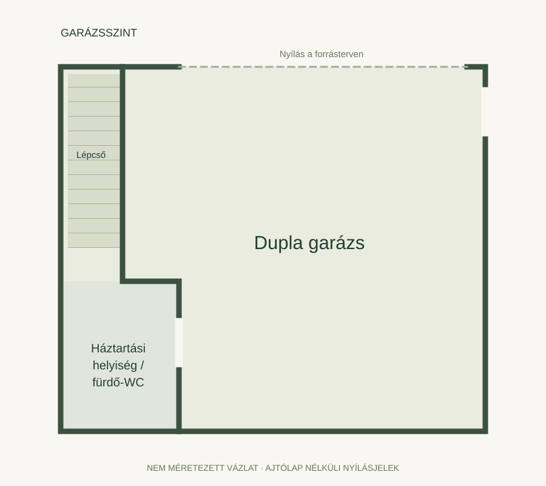
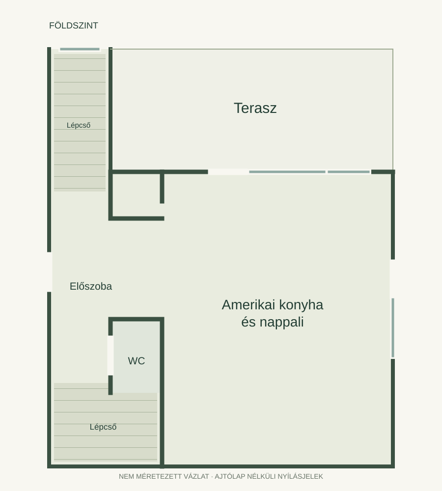
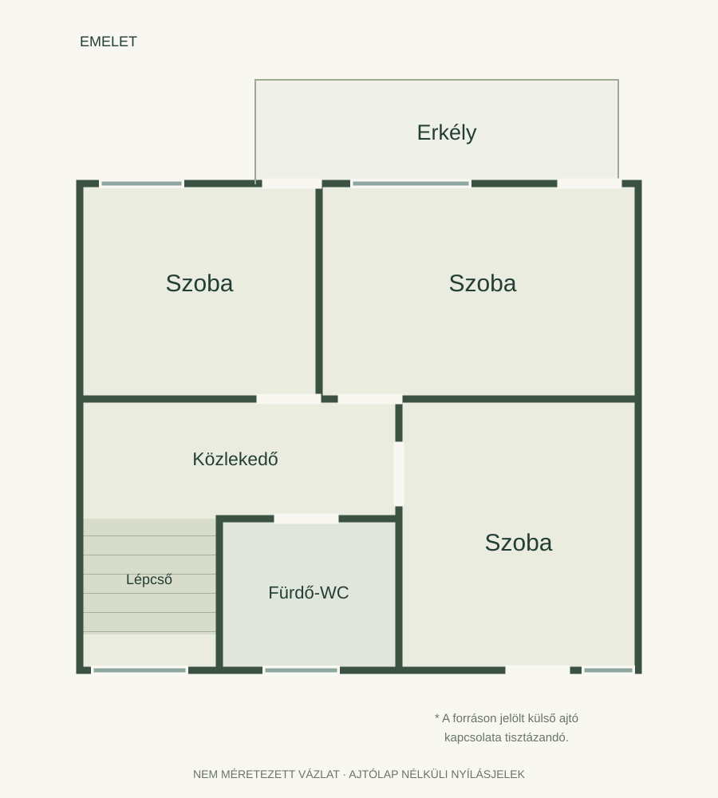

PÉCS · DONÁTUS · TERVEZETT IKERHÁZI OTTHON
Tér a jövőnek.
Donátusi távlatok.
Nappali a terasz mellett, három emeleti szoba és külön garázsszint. Egy tervezett otthon három szintjét mutatjuk meg.
Hirdetett kulcsrakész ár.
Külső építészeti tervlátvány
A kép előkészítése folyamatban.Hirdetett összterület,
a garázst is beleszámítva
Amerikai konyhás nappali
és három emeleti szoba
Hirdetett terasz,
külön emeleti erkéllyel
Garázsszint
és két lakószint
01 / KÍVÜLRŐL NÉZVE
Egy terv.
Több nézőpont.
Négy külső nézet a tervezett ikerházas épületegyüttesről: az érkezés, a kert felőli oldal és a két épületrész kapcsolata.
Retusált építészeti tervlátványok. A jelölések eltávolítása mellett finom tónus- és textúrarészletek módosulhattak.
02 / A TERV TÉRBEN
Három szint.
Átlátható kapcsolatok.
Válassz egy szintet, majd forgasd a modellt. A falakat, a mennyezeteket és a berendezési ötletet külön kapcsolhatod; a beállítások nézetváltáskor is megmaradnak.
A terv új dimenziója.
A térmodell előkészítése és ellenőrzése folyamatban.
A térmodell egy lakóegység három szintjét mutatja meg.
Berendezési mintalista Nappali, étkező és egy háló
Négy kiinduló tétel az IKEA Magyarország kínálatából. Árak ellenőrizve:
- KLIPPAN kétszemélyes kanapé, Vissle szürke1 ×94 990 Ft
180 × 88 cm
- SANDSBERG asztal és 4 szék, fekete/vörösbarna1 ×34 950 Ft
Asztal:110 × 67 cm
- NEIDEN ágykeret LURÖY ágyráccsal1 ×44 990 Ft
Matrac:140 × 200 cm; külső méret:144 × 205 cm
- VESTERÖY kemény zsákrugós matrac1 ×59 990 Ft
140 × 200 cm
A sematikus 3D-bútorok nem méretpontos termékmásolatok; a helyszíni illeszkedést vásárlás előtt ellenőrizni kell.
Az összeg nem tartalmazza a további két szoba, a gardróbok, a konyha, a szaniterek, az ágynemű, a szállítás és a szerelés költségét.
03 / SZINTENKÉNT
A terek
egymásra épülnek.
A garázs az alsó szinten, a közös élettér és a terasz a földszinten, három szoba az emeleten kap helyet a hirdetés és a tájékoztató rajzok szerint.
Az újrarajzolt vázlatok a helyiségkapcsolatokat és a szintek elrendezését szemléltetik.
Előszoba, külön WC, amerikai konyhás nappali és terasz – két lakószint közötti lépcsőkapcsolattal.



04 / A HIRDETÉSBEN SZEREPLŐ TARTALOM
A részletek
helye a tervben.
A hirdetésben szereplő műszaki és területi adatok, egy helyen.
- Tervezett műszaki tartalom
- Téglaépítés, levegő-hőszivattyús rendszer, padlófűtés és klíma a hirdetés szerint.
- Garázs és választható funkció
- Dupla garázs. A hirdetés szoba vagy iroda kialakításának lehetőségét említi; ez nem meglévő negyedik szoba, és az alapterület nem számolható kétszer.
- Telek
- A hirdetés 1400 m²-es telket említ. Nem igazolt, hogy ez a teljes ikerházas telek vagy az eladó lakrész kizárólagos használatú része.
- Két lakóegység kapcsolata
- A hirdetés szerint a lakótereket központi fedett lépcső választja el. A pontos használati és tulajdoni viszony külön tisztázandó.
- Várható átadás
- 2027 vége, a hirdetés szerint.
05 / MOZGÁSBAN
A terv,
egy másik ritmusban.
Építészeti nézetek egy rövidfilm ritmusában.
A BEMUTATÓ HÁTTERE
Tervekből, átláthatóan.
A források és a közelítések részletei
Négy külső építészeti látvány és három tájékoztató alaprajz szolgál forrásként; jelenlegi belső állapotfotó nincs. A képek retusált tervlátványok, a sematikus vázlatok újrarajzolt származékok. Az eredeti forrásokat privát archívum őrzi.
A térmodell nem helyszíni felmérés. A semleges mennyezeti lemezekkel készülő térséma nem rekonstruálja a méretek nélkül bizonytalan tetőmetszetet; a külső tetőformát a tervlátványok mutatják. A lépték, belmagasság, anyagok és a nem dokumentált részletek becslések; a választható bútorok berendezési ötletek. A tervek és a látványok pontos egységhozzárendelése, néhány nyílás és lépcsőkapcsolat részben bizonytalan.
A hirdetett összterület a garázst is tartalmazza, a telek kizárólagos használatú megosztása nincs igazolva. Az ár, a műszaki tartalom, az átadási időpont és az aktuális elérhetőség a hirdetés közlései; a bemutató nem ellenőrzi őket folyamatosan.